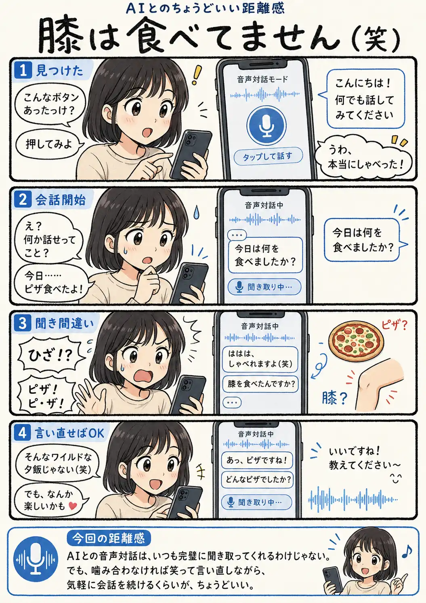

#075
膝は食べてません（笑）
ピザって言ったんだけどな。

メモ
文字でのやり取りに慣れていると、AIが声で自然に話しかけてくるだけでも、少し不思議な感覚があります。会話が滑らかだと、こちらの言葉もすべて正確に伝わっているように感じるかもしれません。
でも、音声では聞き間違いが起こることもあります。そんな時は、発音が悪い、AIが駄目だとすぐに決めず、少しゆっくり言い直せば会話が戻ることもあります。
完璧さを求めすぎず、たまに噛み合わない瞬間まで楽しめると、声で話すハードルも下がりそうです。
今回の距離感
AIとの音声対話は、いつも完璧に聞き取ってくれるわけじゃない。でも、噛み合わなければ笑って言い直しながら、気軽に会話を続けるくらいが、ちょうどいい。